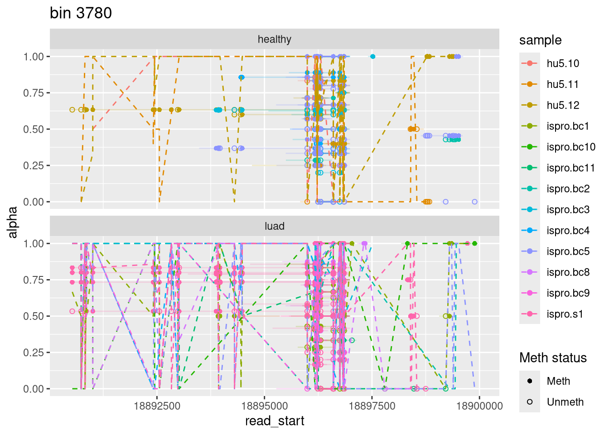

Last updated: 2025-09-24
Checks: 7 0
Knit directory: methyl_nano_cf/
This reproducible R Markdown analysis was created with workflowr (version 1.7.1). The Checks tab describes the reproducibility checks that were applied when the results were created. The Past versions tab lists the development history.
Great! Since the R Markdown file has been committed to the Git repository, you know the exact version of the code that produced these results.
Great job! The global environment was empty. Objects defined in the global environment can affect the analysis in your R Markdown file in unknown ways. For reproduciblity it’s best to always run the code in an empty environment.
The command set.seed(20250606) was run prior to running
the code in the R Markdown file. Setting a seed ensures that any results
that rely on randomness, e.g. subsampling or permutations, are
reproducible.
Great job! Recording the operating system, R version, and package versions is critical for reproducibility.
Nice! There were no cached chunks for this analysis, so you can be confident that you successfully produced the results during this run.
Great job! Using relative paths to the files within your workflowr project makes it easier to run your code on other machines.
Great! You are using Git for version control. Tracking code development and connecting the code version to the results is critical for reproducibility.
The results in this page were generated with repository version 330f8ae. See the Past versions tab to see a history of the changes made to the R Markdown and HTML files.
Note that you need to be careful to ensure that all relevant files for
the analysis have been committed to Git prior to generating the results
(you can use wflow_publish or
wflow_git_commit). workflowr only checks the R Markdown
file, but you know if there are other scripts or data files that it
depends on. Below is the status of the Git repository when the results
were generated:
Ignored files:
Ignored: .Rhistory
Ignored: .Rproj.user/
Ignored: analysis/figure/
Ignored: renv.lock
Ignored: renv/
Unstaged changes:
Modified: .Rprofile
Modified: .gitignore
Modified: analysis/binningGenome.Rmd
Modified: analysis/index.Rmd
Note that any generated files, e.g. HTML, png, CSS, etc., are not included in this status report because it is ok for generated content to have uncommitted changes.
These are the previous versions of the repository in which changes were
made to the R Markdown
(analysis/checkAlphaAndBetaMatch.Rmd) and HTML
(docs/checkAlphaAndBetaMatch.html) files. If you’ve
configured a remote Git repository (see ?wflow_git_remote),
click on the hyperlinks in the table below to view the files as they
were in that past version.
| File | Version | Author | Date | Message |
|---|---|---|---|---|
| Rmd | 330f8ae | caitlinpage | 2025-09-24 | wflow_publish("analysis/checkAlphaAndBetaMatch.Rmd") |
| Rmd | aca159b | caitlinpage | 2025-09-05 | made bed files with modkit and still don’t align |
| Rmd | 1c84bee | caitlinpage | 2025-09-03 | update |
| Rmd | cbc1d0c | caitlinpage | 2025-09-03 | inital commit - try to figure out if alpha and beta actually are aligning properly or what’s going on |
Alpha values are obtained from alpha
Beta values were first done in research sprint work: day 1, day 2
Beta values were then obtained again here???
Goal was to plot alpha and beta together, plots
But I think something went wrong and I no longer trust either my alpha or beta values an
library(data.table)
library(plyranges)Loading required package: BiocGenerics
Attaching package: 'BiocGenerics'The following objects are masked from 'package:stats':
IQR, mad, sd, var, xtabsThe following objects are masked from 'package:base':
anyDuplicated, aperm, append, as.data.frame, basename, cbind,
colnames, dirname, do.call, duplicated, eval, evalq, Filter, Find,
get, grep, grepl, intersect, is.unsorted, lapply, Map, mapply,
match, mget, order, paste, pmax, pmax.int, pmin, pmin.int,
Position, rank, rbind, Reduce, rownames, sapply, saveRDS, setdiff,
table, tapply, union, unique, unsplit, which.max, which.minLoading required package: IRangesLoading required package: S4VectorsLoading required package: stats4
Attaching package: 'S4Vectors'The following objects are masked from 'package:data.table':
first, secondThe following object is masked from 'package:utils':
findMatchesThe following objects are masked from 'package:base':
expand.grid, I, unname
Attaching package: 'IRanges'The following object is masked from 'package:data.table':
shiftLoading required package: GenomicRangesLoading required package: GenomeInfoDbWarning: replacing previous import 'S4Arrays::makeNindexFromArrayViewport' by
'DelayedArray::makeNindexFromArrayViewport' when loading 'SummarizedExperiment'
Attaching package: 'plyranges'The following object is masked from 'package:IRanges':
sliceThe following object is masked from 'package:data.table':
betweenThe following object is masked from 'package:stats':
filterlibrary(tidyr)
Attaching package: 'tidyr'The following object is masked from 'package:S4Vectors':
expandlibrary(dplyr)
Attaching package: 'dplyr'The following objects are masked from 'package:plyranges':
between, n, n_distinctThe following objects are masked from 'package:GenomicRanges':
intersect, setdiff, unionThe following object is masked from 'package:GenomeInfoDb':
intersectThe following objects are masked from 'package:IRanges':
collapse, desc, intersect, setdiff, slice, unionThe following objects are masked from 'package:S4Vectors':
first, intersect, rename, setdiff, setequal, unionThe following objects are masked from 'package:BiocGenerics':
combine, intersect, setdiff, unionThe following objects are masked from 'package:data.table':
between, first, lastThe following objects are masked from 'package:stats':
filter, lagThe following objects are masked from 'package:base':
intersect, setdiff, setequal, unionlibrary(ggplot2)all_samples <- readRDS("/researchers/caitlin.page/cf_nano/r_output/all_samples.rds")
overlap_bins_reads <- readRDS("/researchers/caitlin.page/cf_nano/r_output/overlap_bins_reads.rds")
cg_sites <- readRDS("/researchers/caitlin.page/cf_nano/r_output/cg_sites.rds")
bed_betas <- readRDS("/researchers/caitlin.page/cf_nano/r_output/bed_betas.rds")
wt_beta_chr22 <- readRDS("/researchers/caitlin.page/cf_nano/r_output/wt_beta_chr22.rds")
indiv_reads <- readRDS("/researchers/caitlin.page/cf_nano/r_output/indiv_reads.rds")overlap_bins_reads %>% .[order(.$num_reads_in_bin, decreasing = TRUE),] %>% .[1, c("bin_num", "num_reads_in_bin")]# A tibble: 1 × 2
bin_num num_reads_in_bin
<int> <int>
1 3780 968bin_cpgs <- all_samples %>% filter(read_id %in% filter(overlap_bins_reads, bin_num == 3780)$read_id) %>% .$genom_positions %>% strsplit(",") %>% unlist() %>% as.double()
bin_cpgs <- data.frame(bin_cpgs)
bin_cpgs <- cbind(bin_cpgs, meth = all_samples %>% filter(read_id %in% filter(overlap_bins_reads, bin_num == 3780)$read_id) %>% .$meth_pattern %>% strsplit("") %>% unlist())
bin_cpgs <- bin_cpgs %>% mutate(site_is_unmeth = ifelse(meth == "T", TRUE, FALSE))
alpha_vec <- all_samples %>% filter(read_id %in% filter(overlap_bins_reads, bin_num == 3780)$read_id) %>% .$alpha
rep_vec <- all_samples %>% filter(read_id %in% filter(overlap_bins_reads, bin_num == 3780)$read_id) %>% .$total
bin_cpgs <- cbind(bin_cpgs, alpha = rep(x = alpha_vec, times = rep_vec))
# sample
alpha_vec <- all_samples %>% filter(read_id %in% filter(overlap_bins_reads, bin_num == 3780)$read_id) %>% .$sample
rep_vec <- all_samples %>% filter(read_id %in% filter(overlap_bins_reads, bin_num == 3780)$read_id) %>% .$total
bin_cpgs <- cbind(bin_cpgs, sample = rep(x = alpha_vec, times = rep_vec))
# type
alpha_vec <- all_samples %>% filter(read_id %in% filter(overlap_bins_reads, bin_num == 3780)$read_id) %>% .$type
rep_vec <- all_samples %>% filter(read_id %in% filter(overlap_bins_reads, bin_num == 3780)$read_id) %>% .$total
bin_cpgs <- cbind(bin_cpgs, type = rep(x = alpha_vec, times = rep_vec))overlap_bins_reads %>% filter(bin_num == 3780) %>%
ggplot() +
geom_segment(aes(x = read_start, xend = read_end, y = alpha, yend = alpha, colour = sample, group = sample)) +
geom_point(data = bin_cpgs, aes(x = bin_cpgs, y = alpha, shape = site_is_unmeth, colour = sample, group = sample)) +
scale_shape_manual(values = c(`TRUE` = 1, `FALSE` = 16),
name = "Meth status", labels = c(`TRUE` = "Unmeth", `FALSE` = "Meth")) +
labs(title = "bin 3780") +
facet_wrap(~type, nrow = 2)* this plot has alpha values and the methylation state for each cpg on a read
bed_betas %>% filter(sample == "hu5.10") %>% summary(.) seqnames start end width strand
chr22 :92973 Min. :10521181 Min. :10521181 Min. :1 +: 0
chr1 : 0 1st Qu.:23521265 1st Qu.:23521265 1st Qu.:1 -: 0
chr2 : 0 Median :35373136 Median :35373136 Median :1 *:92973
chr3 : 0 Mean :33589451 Mean :33589451 Mean :1
chr4 : 0 3rd Qu.:43827134 3rd Qu.:43827134 3rd Qu.:1
chr5 : 0 Max. :50807889 Max. :50807889 Max. :1
(Other): 0
name sample type beta
Min. :0.0000 Length:92973 Length:92973 Min. :0.0000
1st Qu.:0.0000 Class :character Class :character 1st Qu.:0.0000
Median :1.0000 Mode :character Mode :character Median :1.0000
Mean :0.6989 Mean :0.6989
3rd Qu.:1.0000 3rd Qu.:1.0000
Max. :1.0000 Max. :1.0000
bed_sample
Length:92973
Class :character
Mode :character
summary(wt_beta_chr22$HU005.10.unmeth) Min. 1st Qu. Median Mean 3rd Qu. Max.
0 0 0 0 0 0 overlap_bins_reads %>% filter(bin_num == 3780) %>%
ggplot() +
geom_segment(aes(x = read_start, xend = read_end, y = alpha, yend = alpha, colour = type, group = sample)) +
geom_point(data = bin_cpgs, aes(x = bin_cpgs, y = alpha, shape = site_is_unmeth, colour = type, group = sample)) +
scale_shape_manual(values = c(`TRUE` = 1, `FALSE` = 16),
name = "Meth status", labels = c(`TRUE` = "Unmeth", `FALSE` = "Meth")) +
labs(title = "bin 3780") +
facet_wrap(~sample)overlap_bins_reads %>% filter(bin_num == 3780, sample == "hu5.10") %>%
ggplot() +
geom_segment(aes(x = read_start, xend = read_end, y = alpha, yend = alpha, colour = type, group = sample)) +
geom_point(data = filter(bin_cpgs, sample == "hu5.10"), aes(x = bin_cpgs, y = alpha, shape = site_is_unmeth, colour = type, group = sample)) +
scale_shape_manual(values = c(`TRUE` = 1, `FALSE` = 16),
name = "Meth status", labels = c(`TRUE` = "Unmeth", `FALSE` = "Meth")) +
labs(title = "bin 3780: hu5.10")overlap_bins_reads %>% filter(bin_num == 3780, sample == "hu5.10", alpha %in% c(0,1)) # A tibble: 7 × 21
seqnames start end width strand bin_num read_id read_length type sample
<fct> <int> <int> <int> <fct> <int> <chr> <int> <chr> <chr>
1 chr22 18895001 1.89e7 5000 * 3780 a323a4… 298 heal… hu5.10
2 chr22 18895001 1.89e7 5000 * 3780 d4aa41… 184 heal… hu5.10
3 chr22 18895001 1.89e7 5000 * 3780 4d7a8e… 254 heal… hu5.10
4 chr22 18895001 1.89e7 5000 * 3780 42b151… 296 heal… hu5.10
5 chr22 18895001 1.89e7 5000 * 3780 d855ca… 202 heal… hu5.10
6 chr22 18895001 1.89e7 5000 * 3780 b62fe6… 366 heal… hu5.10
7 chr22 18895001 1.89e7 5000 * 3780 7c3ff4… 174 heal… hu5.10
# ℹ 11 more variables: index_cg <int>, meth_pattern <chr>, num_meth <int>,
# total <int>, alpha <dbl>, read_start <int>, read_end <int>,
# cancer_group <chr>, num_reads_in_bin <int>, var_alpha <dbl>,
# var_alpha_per_sample_per_bin <dbl>overlap_bins_reads %>% filter(bin_num == 3780, sample == "hu5.10") %>%
ggplot() +
geom_segment(aes(x = read_start, xend = read_end, y = alpha, yend = alpha, colour = read_id, group = sample)) +
geom_point(data = filter(bin_cpgs, sample == "hu5.10"), aes(x = bin_cpgs, y = alpha, shape = site_is_unmeth, colour = sample, group = sample)) +
scale_shape_manual(values = c(`TRUE` = 1, `FALSE` = 16),
name = "Meth status", labels = c(`TRUE` = "Unmeth", `FALSE` = "Meth")) +
labs(title = "bin 3780: hu5.10")* need it to have the circle colours as well - read id in the bin_cpg * but also maybe making the line thicker and then opaque would help?
overlap_bins_reads %>% filter(bin_num == 3780, sample == "hu5.10") %>%
ggplot() +
geom_segment(aes(x = read_start, xend = read_end, y = alpha, yend = alpha, colour = sample, group = sample), alpha = 0.3) +
geom_point(data = filter(bin_cpgs, sample == "hu5.10"), aes(x = bin_cpgs, y = alpha, shape = site_is_unmeth, colour = sample, group = sample)) +
scale_shape_manual(values = c(`TRUE` = 1, `FALSE` = 16),
name = "Meth status", labels = c(`TRUE` = "Unmeth", `FALSE` = "Meth")) +
labs(title = "bin 3780: hu5.10")* that shows it a little bit
overlap_bins_reads %>% filter(bin_num == 3780) %>%
ggplot() +
geom_segment(aes(x = read_start, xend = read_end, y = alpha, yend = alpha, colour = sample, group = sample), alpha = 0.2) +
geom_point(data = bin_cpgs, aes(x = bin_cpgs, y = alpha, shape = site_is_unmeth, colour = sample, group = sample)) +
scale_shape_manual(values = c(`TRUE` = 1, `FALSE` = 16),
name = "Meth status", labels = c(`TRUE` = "Unmeth", `FALSE` = "Meth")) +
labs(title = "bin 3780") +
facet_wrap(~type, nrow = 2)c(bins_20_highest_var = overlap_bins_reads %>% .[order(.$var_alpha, decreasing = TRUE),] %>% .$bin_num %>% unique() %>% .[1:20],
bins_20_lowest_var = overlap_bins_reads %>% .[order(.$var_alpha, decreasing = FALSE),] %>% .$bin_num %>% unique() %>% .[1:20]) bins_20_highest_var1 bins_20_highest_var2 bins_20_highest_var3
2377 9598 3261
bins_20_highest_var4 bins_20_highest_var5 bins_20_highest_var6
2224 6883 2119
bins_20_highest_var7 bins_20_highest_var8 bins_20_highest_var9
3387 6878 2122
bins_20_highest_var10 bins_20_highest_var11 bins_20_highest_var12
2129 5217 6840
bins_20_highest_var13 bins_20_highest_var14 bins_20_highest_var15
2577 6861 3065
bins_20_highest_var16 bins_20_highest_var17 bins_20_highest_var18
3052 3174 3308
bins_20_highest_var19 bins_20_highest_var20 bins_20_lowest_var1
2130 2226 2167
bins_20_lowest_var2 bins_20_lowest_var3 bins_20_lowest_var4
4072 9265 10058
bins_20_lowest_var5 bins_20_lowest_var6 bins_20_lowest_var7
9413 8516 4375
bins_20_lowest_var8 bins_20_lowest_var9 bins_20_lowest_var10
9243 9960 7568
bins_20_lowest_var11 bins_20_lowest_var12 bins_20_lowest_var13
9261 10046 10092
bins_20_lowest_var14 bins_20_lowest_var15 bins_20_lowest_var16
10056 6284 9340
bins_20_lowest_var17 bins_20_lowest_var18 bins_20_lowest_var19
9428 5713 8796
bins_20_lowest_var20
5686 high_var_bins_20 <- overlap_bins_reads %>% .[order(.$var_alpha, decreasing = TRUE),] %>% .$bin_num %>% unique()
low_var_bins_20 <- overlap_bins_reads %>% .[order(.$var_alpha, decreasing = FALSE),] %>% .$bin_num %>% unique() overlap_bins_reads %>% filter(bin_num %in% high_var_bins_20[1:20]) %>%
ggplot(aes(x = alpha, colour = as.factor(bin_num))) +
geom_density() +
labs(title = "Distribution of alpha in bins with highest var")overlap_bins_reads %>% filter(bin_num %in% high_var_bins_20[1:20]) %>%
ggplot(aes(x = alpha, colour = as.factor(bin_num))) +
geom_density() +
labs(title = "Distribution of alpha in bins with highest var") +
facet_wrap(~type)* something weird going on in one the bins in the healthy samples * would have been nice if there was a distinct difference between the luad and healthy * but also this is highest var bins overall - not necessarily bins with high var for either * but I guess what we want would be bins with low var individually - but the meth is different
overlap_bins_reads %>% filter(bin_num %in% low_var_bins_20[1:20]) %>%
ggplot(aes(x = alpha, colour = as.factor(bin_num))) +
geom_density() +
labs(title = "Distribution of alpha in bins with lowest var")overlap_bins_reads %>% filter(bin_num %in% low_var_bins_20[1:20]) %>%
ggplot(aes(x = alpha, colour = as.factor(bin_num))) +
geom_density() +
labs(title = "Distribution of alpha in bins with lowest var") +
facet_wrap(~type)overlap_bins_reads %>% filter(bin_num %in% low_var_bins_20[1:10]) %>%
ggplot(aes(x = alpha, colour = as.factor(bin_num))) +
geom_density() +
labs(title = "Distribution of alpha in bins with lowest var")* this is nice
match_names <- cbind(sample_names = unique(overlap_bins_reads$sample)[c(12,8,13,3,9,10,1,2,5,6,11,4,7)], bed_names = unique(bed_betas$sample)) %>% data.frame()
bed_betas$bed_sample <- bed_betas$sample
bed_betas <- bed_betas %>% mutate(sample = match_names[match(.$bed_sample, match_names$bed_names), "sample_names"])overlap_bins_reads %>% filter(bin_num == 3780) %>%
ggplot() +
geom_segment(aes(x = read_start, xend = read_end, y = alpha, yend = alpha, colour = sample, group = sample), alpha = 0.2) +
geom_point(data = bin_cpgs, aes(x = bin_cpgs, y = alpha, shape = site_is_unmeth, colour = sample, group = sample)) +
scale_shape_manual(values = c(`TRUE` = 1, `FALSE` = 16),
name = "Meth status", labels = c(`TRUE` = "Unmeth", `FALSE` = "Meth")) +
geom_line(data = filter(bed_betas, start >= min(bin_cpgs$bin_cpgs), start <= max(bin_cpgs$bin_cpgs)),
aes(x = start, y = beta, colour = sample, group = sample),
linetype = "dashed") +
labs(title = "bin 3780") +
facet_wrap(~type, nrow = 2)
overlap_bins_reads %>% filter(bin_num == 3780, sample == "hu5.10") %>%
ggplot() +
geom_segment(aes(x = read_start, xend = read_end, y = alpha, yend = alpha, colour = sample, group = sample), alpha = 0.2) +
geom_point(data = filter(bin_cpgs, sample == "hu5.10"), aes(x = bin_cpgs, y = alpha, shape = site_is_unmeth, colour = sample, group = sample)) +
scale_shape_manual(values = c(`TRUE` = 1, `FALSE` = 16),
name = "Meth status", labels = c(`TRUE` = "Unmeth", `FALSE` = "Meth")) +
geom_line(data = filter(bed_betas, sample == "hu5.10", start >= min(bin_cpgs$bin_cpgs), start <= max(bin_cpgs$bin_cpgs)),
aes(x = start, y = beta, colour = sample, group = sample),
linetype = "dashed") +
labs(title = "bin 3780: hu5.10") +
scale_x_continuous(limits = c(18896000, 18897000))Warning: Removed 2 rows containing missing values or values outside the scale range
(`geom_segment()`).Warning: Removed 2 rows containing missing values or values outside the scale range
(`geom_point()`).Warning: Removed 6 rows containing missing values or values outside the scale range
(`geom_line()`).overlap_bins_reads %>% filter(bin_num == 3780, sample == "hu5.10") # A tibble: 10 × 21
seqnames start end width strand bin_num read_id read_length type sample
<fct> <int> <int> <int> <fct> <int> <chr> <int> <chr> <chr>
1 chr22 1.89e7 1.89e7 5000 * 3780 0d26cd… 519 heal… hu5.10
2 chr22 1.89e7 1.89e7 5000 * 3780 f57e62… 659 heal… hu5.10
3 chr22 1.89e7 1.89e7 5000 * 3780 a323a4… 298 heal… hu5.10
4 chr22 1.89e7 1.89e7 5000 * 3780 d4aa41… 184 heal… hu5.10
5 chr22 1.89e7 1.89e7 5000 * 3780 4d7a8e… 254 heal… hu5.10
6 chr22 1.89e7 1.89e7 5000 * 3780 42b151… 296 heal… hu5.10
7 chr22 1.89e7 1.89e7 5000 * 3780 d855ca… 202 heal… hu5.10
8 chr22 1.89e7 1.89e7 5000 * 3780 b62fe6… 366 heal… hu5.10
9 chr22 1.89e7 1.89e7 5000 * 3780 7c3ff4… 174 heal… hu5.10
10 chr22 1.89e7 1.89e7 5000 * 3780 d549e1… 283 heal… hu5.10
# ℹ 11 more variables: index_cg <int>, meth_pattern <chr>, num_meth <int>,
# total <int>, alpha <dbl>, read_start <int>, read_end <int>,
# cancer_group <chr>, num_reads_in_bin <int>, var_alpha <dbl>,
# var_alpha_per_sample_per_bin <dbl>filter(bed_betas, sample == "hu5.10", start >= min(bin_cpgs$bin_cpgs), start <= max(bin_cpgs$bin_cpgs)) seqnames start end width strand name sample type beta bed_sample
1 chr22 18891008 18891008 1 * 0.5 hu5.10 healthy 0.5 hu5.10
2 chr22 18892444 18892444 1 * 1.0 hu5.10 healthy 1.0 hu5.10
3 chr22 18892835 18892835 1 * 1.0 hu5.10 healthy 1.0 hu5.10
4 chr22 18893016 18893016 1 * 1.0 hu5.10 healthy 1.0 hu5.10
5 chr22 18895995 18895995 1 * 1.0 hu5.10 healthy 1.0 hu5.10
6 chr22 18895996 18895996 1 * 0.0 hu5.10 healthy 0.0 hu5.10
7 chr22 18896177 18896177 1 * 1.0 hu5.10 healthy 1.0 hu5.10
8 chr22 18896178 18896178 1 * 1.0 hu5.10 healthy 1.0 hu5.10
9 chr22 18896209 18896209 1 * 1.0 hu5.10 healthy 1.0 hu5.10
10 chr22 18896210 18896210 1 * 1.0 hu5.10 healthy 1.0 hu5.10
11 chr22 18896219 18896219 1 * 1.0 hu5.10 healthy 1.0 hu5.10
12 chr22 18896220 18896220 1 * 1.0 hu5.10 healthy 1.0 hu5.10
13 chr22 18896226 18896226 1 * 0.0 hu5.10 healthy 0.0 hu5.10
14 chr22 18896246 18896246 1 * 1.0 hu5.10 healthy 1.0 hu5.10
15 chr22 18896247 18896247 1 * 1.0 hu5.10 healthy 1.0 hu5.10
16 chr22 18896304 18896304 1 * 1.0 hu5.10 healthy 1.0 hu5.10
17 chr22 18896305 18896305 1 * 1.0 hu5.10 healthy 1.0 hu5.10
18 chr22 18896602 18896602 1 * 0.0 hu5.10 healthy 0.0 hu5.10
19 chr22 18896751 18896751 1 * 0.0 hu5.10 healthy 0.0 hu5.10
20 chr22 18896782 18896782 1 * 0.0 hu5.10 healthy 0.0 hu5.10
21 chr22 18896832 18896832 1 * 0.0 hu5.10 healthy 0.0 hu5.10
22 chr22 18896853 18896853 1 * 1.0 hu5.10 healthy 1.0 hu5.10all_samples %>% filter(sample == "hu5.10", read_id %in% filter(overlap_bins_reads, bin_num == 3780, sample == "hu5.10")$read_id) read_id seqnames start end read_length
1 0d26cd7f-14c3-4877-9682-dd3f19d9a54c chr22 18895773 18896292 519
2 f57e628a-7b6d-4d3f-92ff-a7ea08d588ed chr22 18895877 18896536 659
3 a323a461-a8dc-4f05-a5b0-88da3eef09be chr22 18896258 18896556 298
4 d4aa4141-9433-45c3-b275-5d6160ff2e05 chr22 18896269 18896453 184
5 4d7a8e95-2bed-4d47-a9ee-3fddc339e0a2 chr22 18896282 18896536 254
6 42b151bd-0062-4542-b99e-10253ee72cbe chr22 18896293 18896589 296
7 d855ca96-9e2f-4568-8782-5f4b8d244137 chr22 18896293 18896495 202
8 b62fe613-d079-4cc6-9ba7-57c4cea632e1 chr22 18896372 18896738 366
9 7c3ff42f-7d65-4ff6-98b4-2dedfd25191f chr22 18896473 18896647 174
10 d549e183-ed12-4d5d-b6c2-40420a7c8739 chr22 18896652 18896935 283
type sample index_cg meth_pattern
1 healthy hu5.10 99859 TCCCCC
2 healthy hu5.10 99859 CCCCTCC
3 healthy hu5.10 99865 C
4 healthy hu5.10 99865 C
5 healthy hu5.10 99865 T
6 healthy hu5.10 99865 C
7 healthy hu5.10 99865 C
8 healthy hu5.10 99866 T
9 healthy hu5.10 99866 T
10 healthy hu5.10 99867 TTTC
cpg_positions
1 99859,99860,99861,99862,99863,99864
2 99859,99860,99861,99862,99863,99864,99865
3 99865
4 99865
5 99865
6 99865
7 99865
8 99866
9 99866
10 99867,99868,99869,99870
genom_positions num_meth
1 18895995,18896177,18896209,18896219,18896226,18896246 5
2 18895995,18896177,18896209,18896219,18896226,18896246,18896304 6
3 18896304 1
4 18896304 1
5 18896304 0
6 18896304 1
7 18896304 1
8 18896601 0
9 18896601 0
10 18896751,18896782,18896832,18896853 1
total alpha read_start read_end
1 6 0.8333333 18895773 18896292
2 7 0.8571429 18895877 18896536
3 1 1.0000000 18896258 18896556
4 1 1.0000000 18896269 18896453
5 1 0.0000000 18896282 18896536
6 1 1.0000000 18896293 18896589
7 1 1.0000000 18896293 18896495
8 1 0.0000000 18896372 18896738
9 1 0.0000000 18896473 18896647
10 4 0.2500000 18896652 18896935bin_cpgs %>% filter(bin_cpgs == 18895995, sample == "hu5.10") bin_cpgs meth site_is_unmeth alpha sample type
1 18895995 T TRUE 0.8333333 hu5.10 healthy
2 18895995 C FALSE 0.8571429 hu5.10 healthybed_betas %>% filter(start == 18895995, sample == "hu5.10") seqnames start end width strand name sample type beta bed_sample
1 chr22 18895995 18895995 1 * 1 hu5.10 healthy 1 hu5.10all_samples %>% filter(sample == "hu5.10") %>% .[grep(18895995, .$genom_positions),] read_id seqnames start end
3795 0d26cd7f-14c3-4877-9682-dd3f19d9a54c chr22 18895773 18896292
3796 f57e628a-7b6d-4d3f-92ff-a7ea08d588ed chr22 18895877 18896536
read_length type sample index_cg meth_pattern
3795 519 healthy hu5.10 99859 TCCCCC
3796 659 healthy hu5.10 99859 CCCCTCC
cpg_positions
3795 99859,99860,99861,99862,99863,99864
3796 99859,99860,99861,99862,99863,99864,99865
genom_positions num_meth
3795 18895995,18896177,18896209,18896219,18896226,18896246 5
3796 18895995,18896177,18896209,18896219,18896226,18896246,18896304 6
total alpha read_start read_end
3795 6 0.8333333 18895773 18896292
3796 7 0.8571429 18895877 18896536indiv_reads %>% filter(ref_position == 18895995) read_id forward_read_position ref_position
<char> <int> <int>
1: 0d26cd7f-14c3-4877-9682-dd3f19d9a54c 296 18895995
chrom mod_strand ref_strand ref_mod_strand fw_soft_clipped_start
<char> <char> <char> <char> <int>
1: chr22 + - - 0
fw_soft_clipped_end alignment_start alignment_end read_length call_prob
<int> <int> <int> <int> <num>
1: 0 18895773 18896292 519 0.7246094
call_code base_qual ref_kmer query_kmer canonical_base modified_primary_base
<char> <int> <char> <char> <char> <char>
1: - 255 . TACGT C C
fail inferred within_alignment flag seqnames start end
<lgcl> <lgcl> <lgcl> <int> <char> <int> <int>
1: TRUE FALSE TRUE 16 chr22 18895773 18896292indiv_reads %>% filter(read_id %in% c("0d26cd7f-14c3-4877-9682-dd3f19d9a54c", "f57e628a-7b6d-4d3f-92ff-a7ea08d588ed")) %>% .[c(1,7),] read_id forward_read_position ref_position
<char> <int> <int>
1: 0d26cd7f-14c3-4877-9682-dd3f19d9a54c 296 18895995
2: f57e628a-7b6d-4d3f-92ff-a7ea08d588ed 117 18895994
chrom mod_strand ref_strand ref_mod_strand fw_soft_clipped_start
<char> <char> <char> <char> <int>
1: chr22 + - - 0
2: chr22 + + + 0
fw_soft_clipped_end alignment_start alignment_end read_length call_prob
<int> <int> <int> <int> <num>
1: 0 18895773 18896292 519 0.7246094
2: 0 18895877 18896536 659 0.9433594
call_code base_qual ref_kmer query_kmer canonical_base modified_primary_base
<char> <int> <char> <char> <char> <char>
1: - 255 . TACGT C C
2: m 255 . GACGT C C
fail inferred within_alignment flag seqnames start end
<lgcl> <lgcl> <lgcl> <int> <char> <int> <int>
1: TRUE FALSE TRUE 16 chr22 18895773 18896292
2: TRUE FALSE TRUE 0 chr22 18895877 18896536https://nanoporetech.github.io/modkit/faq.html - * the probability section for the calls
To extract (stranded) methylation information from the mod_mapping.bam files, we used modbam2bed (https://github.com/epi2me-labs/modbam2bed) v.0.4.5, specifying a minimum probability threshold of 0.667, and filtering out positions with 0 confident reads using awk. The full command line was “modbam2bed –cpg -t 4 -a 0.333 -b 0.667 | awk ’($5>0){print} > out.bed.” All coordinates are in GRCh38 and are 0-based. These files are named “.5mC.cut0.667.hg38.bed.gz.” Column 11 corresponds to the percent of reads methylated. Modbam2bed does not provide a column for the actual number of reads that this percentage is based on, but it can be calculated from the other columns. readCount=(col5col10)/1000. We also provide a simple bedgraph with just the methylation fraction (beta) values in files named “*cut0.667.hg38.sorted.bedgraph.gz.”
list.files("/researchers/caitlin.page/cf_nano/modkit_output/bed") [1] "hu5.10.bed" "hu5.10.bed.gz.tbi" "hu5.11.bed"
[4] "ispro.bc1.bed" "ispro.bc10.bed" "ispro.bc11.bed"
[7] "ispro.bc2.bed" "ispro.bc3.bed" "ispro.bc4.bed"
[10] "ispro.bc5.bed" "ispro.bc8.bed" "ispro.bc9.bed"
[13] "ispro.s1.bed" "sort_hu5.10.bed" modkit_bed_hu5.10 <- read.table("/researchers/caitlin.page/cf_nano/modkit_output/bed/hu5.10.bed")colnames of bed file positions are 0 based
colnames(modkit_bed_hu5.10) <- c("seqnames", "start", "end", "mod_base_code", "score_same_as_coverage", "strand", "start_pos", "end_pos", "colour", "coverage", "beta", "n_mod", "n_canon", "n_other_mod", "n_delete", "n_fail", "n_diff", "n_nocall")unique(modkit_bed_hu5.10$mod_base_code)[1] "m"summary(modkit_bed_hu5.10$coverage) Min. 1st Qu. Median Mean 3rd Qu. Max.
1.000 1.000 1.000 1.065 1.000 843.000 summary(modkit_bed_hu5.10$n_mod) Min. 1st Qu. Median Mean 3rd Qu. Max.
0.00000 0.00000 0.00000 0.02619 0.00000 104.00000 summary(modkit_bed_hu5.10$n_canon) Min. 1st Qu. Median Mean 3rd Qu. Max.
0.000 1.000 1.000 1.039 1.000 843.000 modkit_bed_hu5.10_chr22 <- modkit_bed_hu5.10 %>% filter(seqnames == "chr22")modkit_bed_hu5.10_chr22 %>% filter(start > 18895980) %>% head() seqnames start end mod_base_code score_same_as_coverage strand
1 chr22 18895981 18895982 m 1 -
2 chr22 18895992 18895993 m 1 -
3 chr22 18896011 18896012 m 1 -
4 chr22 18896022 18896023 m 1 -
5 chr22 18896024 18896025 m 1 +
6 chr22 18896041 18896042 m 1 -
start_pos end_pos colour coverage beta n_mod n_canon n_other_mod n_delete
1 18895981 18895982 255,0,0 1 0 0 1 0 0
2 18895992 18895993 255,0,0 1 0 0 1 0 0
3 18896011 18896012 255,0,0 1 0 0 1 0 0
4 18896022 18896023 255,0,0 1 0 0 1 0 0
5 18896024 18896025 255,0,0 1 0 0 1 0 0
6 18896041 18896042 255,0,0 1 0 0 1 0 0
n_fail n_diff n_nocall
1 0 0 0
2 0 0 0
3 0 0 0
4 0 0 0
5 0 0 0
6 0 0 0and of course here it doesn’t even exist as a position
because we need another problem
and the closest one to it is 2 bases off and is canon - beta is 0
so maybe the positions are off - but still means the answer is wrong
oh wait it doesn’t automatically restrict to just cpgs (b/c I didn’t do the cpg bit with the fasta - should try that again)
find_overlaps(as_granges(modkit_bed_hu5.10_chr22), as_granges(cg_sites)) %>% data.frame() %>% head() seqnames start end width strand mod_base_code score_same_as_coverage
1 chr22 10521180 10521181 2 - m 1
2 chr22 10522480 10522481 2 + m 1
3 chr22 10522482 10522483 2 + m 1
4 chr22 10522500 10522501 2 + m 1
5 chr22 10522648 10522649 2 + m 1
6 chr22 10527072 10527073 2 - m 1
start_pos end_pos colour coverage beta n_mod n_canon n_other_mod n_delete
1 10521180 10521181 255,0,0 1 0 0 1 0 0
2 10522480 10522481 255,0,0 1 100 1 0 0 0
3 10522482 10522483 255,0,0 1 0 0 1 0 0
4 10522500 10522501 255,0,0 1 100 1 0 0 0
5 10522648 10522649 255,0,0 1 0 0 1 0 0
6 10527072 10527073 255,0,0 1 0 0 1 0 0
n_fail n_diff n_nocall pos seq index
1 0 0 0 chr22-10521180 CG 48
2 0 0 0 chr22-10522481 CG 53
3 0 0 0 chr22-10522481 CG 53
4 0 0 0 chr22-10522501 CG 54
5 0 0 0 chr22-10522649 CG 56
6 0 0 0 chr22-10527071 CG 299find_overlaps(as_granges(modkit_bed_hu5.10_chr22), as_granges(cg_sites)) %>% data.frame() %>%
ggplot(aes(x = beta)) +
geom_density()indiv_reads %>% filter(ref_position == 18895995) read_id forward_read_position ref_position
<char> <int> <int>
1: 0d26cd7f-14c3-4877-9682-dd3f19d9a54c 296 18895995
chrom mod_strand ref_strand ref_mod_strand fw_soft_clipped_start
<char> <char> <char> <char> <int>
1: chr22 + - - 0
fw_soft_clipped_end alignment_start alignment_end read_length call_prob
<int> <int> <int> <int> <num>
1: 0 18895773 18896292 519 0.7246094
call_code base_qual ref_kmer query_kmer canonical_base modified_primary_base
<char> <int> <char> <char> <char> <char>
1: - 255 . TACGT C C
fail inferred within_alignment flag seqnames start end
<lgcl> <lgcl> <lgcl> <int> <char> <int> <int>
1: TRUE FALSE TRUE 16 chr22 18895773 18896292indiv_reads %>% filter(ref_position > 18895980, ref_position < 18896100) read_id forward_read_position ref_position
<char> <int> <int>
1: 0d26cd7f-14c3-4877-9682-dd3f19d9a54c 296 18895995
2: f57e628a-7b6d-4d3f-92ff-a7ea08d588ed 117 18895994
chrom mod_strand ref_strand ref_mod_strand fw_soft_clipped_start
<char> <char> <char> <char> <int>
1: chr22 + - - 0
2: chr22 + + + 0
fw_soft_clipped_end alignment_start alignment_end read_length call_prob
<int> <int> <int> <int> <num>
1: 0 18895773 18896292 519 0.7246094
2: 0 18895877 18896536 659 0.9433594
call_code base_qual ref_kmer query_kmer canonical_base modified_primary_base
<char> <int> <char> <char> <char> <char>
1: - 255 . TACGT C C
2: m 255 . GACGT C C
fail inferred within_alignment flag seqnames start end
<lgcl> <lgcl> <lgcl> <int> <char> <int> <int>
1: TRUE FALSE TRUE 16 chr22 18895773 18896292
2: TRUE FALSE TRUE 0 chr22 18895877 18896536cg_sites %>% filter(start > 18895980) %>% head() pos seqnames start end width seq index
1 chr22-18895995 chr22 18895995 18895996 2 CG 99859
2 chr22-18896177 chr22 18896177 18896178 2 CG 99860
3 chr22-18896209 chr22 18896209 18896210 2 CG 99861
4 chr22-18896219 chr22 18896219 18896220 2 CG 99862
5 chr22-18896226 chr22 18896226 18896227 2 CG 99863
6 chr22-18896246 chr22 18896246 18896247 2 CG 99864
sessionInfo()R version 4.4.1 (2024-06-14)
Platform: x86_64-pc-linux-gnu
Running under: Red Hat Enterprise Linux 9.5 (Plow)
Matrix products: default
BLAS/LAPACK: FlexiBLAS OPENBLAS-OPENMP; LAPACK version 3.9.0
locale:
[1] LC_CTYPE=en_AU.UTF-8 LC_NUMERIC=C
[3] LC_TIME=en_AU.UTF-8 LC_COLLATE=en_AU.UTF-8
[5] LC_MONETARY=en_AU.UTF-8 LC_MESSAGES=en_AU.UTF-8
[7] LC_PAPER=en_AU.UTF-8 LC_NAME=C
[9] LC_ADDRESS=C LC_TELEPHONE=C
[11] LC_MEASUREMENT=en_AU.UTF-8 LC_IDENTIFICATION=C
time zone: Australia/Melbourne
tzcode source: system (glibc)
attached base packages:
[1] stats4 stats graphics grDevices datasets utils methods
[8] base
other attached packages:
[1] ggplot2_3.5.2 dplyr_1.1.4 tidyr_1.3.1
[4] plyranges_1.26.0 GenomicRanges_1.58.0 GenomeInfoDb_1.42.3
[7] IRanges_2.40.1 S4Vectors_0.44.0 BiocGenerics_0.52.0
[10] data.table_1.17.8 workflowr_1.7.1
loaded via a namespace (and not attached):
[1] tidyselect_1.2.1 farver_2.1.2
[3] Biostrings_2.74.1 bitops_1.0-9
[5] fastmap_1.2.0 RCurl_1.98-1.17
[7] GenomicAlignments_1.42.0 promises_1.3.3
[9] XML_3.99-0.18 digest_0.6.37
[11] lifecycle_1.0.4 processx_3.8.6
[13] magrittr_2.0.3 compiler_4.4.1
[15] rlang_1.1.6 sass_0.4.10
[17] tools_4.4.1 utf8_1.2.6
[19] yaml_2.3.10 rtracklayer_1.66.0
[21] knitr_1.50 labeling_0.4.3
[23] S4Arrays_1.6.0 curl_6.4.0
[25] DelayedArray_0.32.0 RColorBrewer_1.1-3
[27] abind_1.4-8 BiocParallel_1.40.2
[29] withr_3.0.2 purrr_1.1.0
[31] grid_4.4.1 git2r_0.36.2
[33] scales_1.4.0 SummarizedExperiment_1.36.0
[35] cli_3.6.5 rmarkdown_2.29
[37] crayon_1.5.3 generics_0.1.4
[39] rstudioapi_0.17.1 httr_1.4.7
[41] rjson_0.2.23 cachem_1.1.0
[43] stringr_1.5.1 zlibbioc_1.52.0
[45] parallel_4.4.1 BiocManager_1.30.26
[47] XVector_0.46.0 restfulr_0.0.16
[49] matrixStats_1.5.0 vctrs_0.6.5
[51] Matrix_1.7-0 jsonlite_2.0.0
[53] callr_3.7.6 jquerylib_0.1.4
[55] glue_1.8.0 codetools_0.2-20
[57] ps_1.9.1 stringi_1.8.7
[59] gtable_0.3.6 later_1.4.2
[61] BiocIO_1.16.0 UCSC.utils_1.2.0
[63] tibble_3.3.0 pillar_1.11.0
[65] htmltools_0.5.8.1 GenomeInfoDbData_1.2.13
[67] R6_2.6.1 rprojroot_2.1.0
[69] evaluate_1.0.4 lattice_0.22-6
[71] Biobase_2.66.0 Rsamtools_2.22.0
[73] renv_1.1.5 httpuv_1.6.16
[75] bslib_0.9.0 Rcpp_1.1.0
[77] SparseArray_1.6.2 whisker_0.4.1
[79] xfun_0.52 fs_1.6.6
[81] MatrixGenerics_1.18.1 getPass_0.2-4
[83] pkgconfig_2.0.3